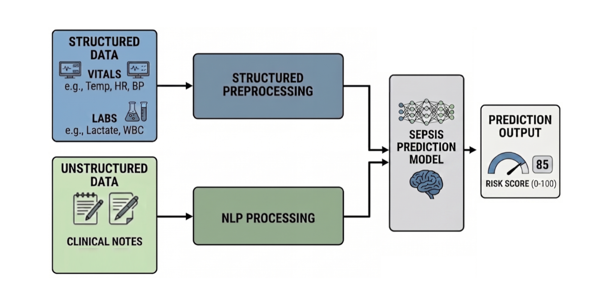
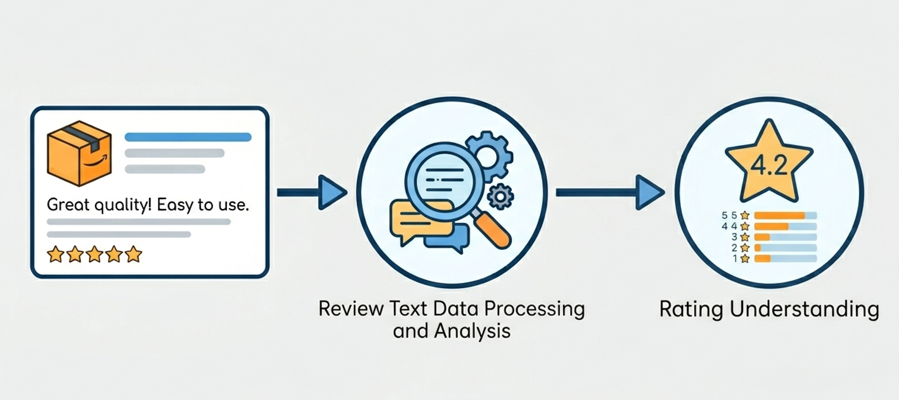
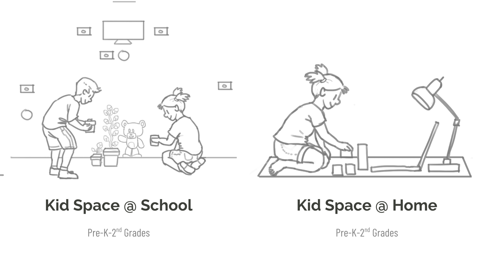
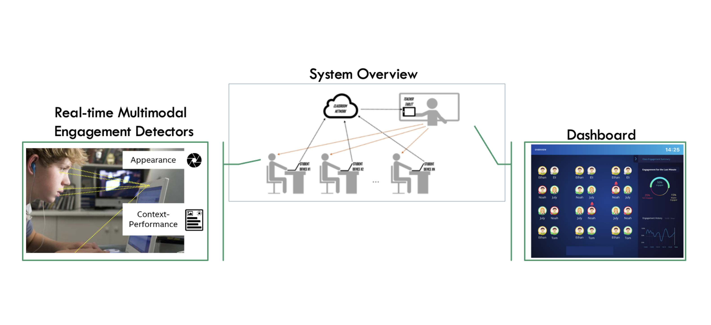
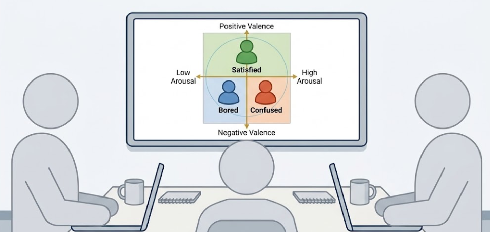
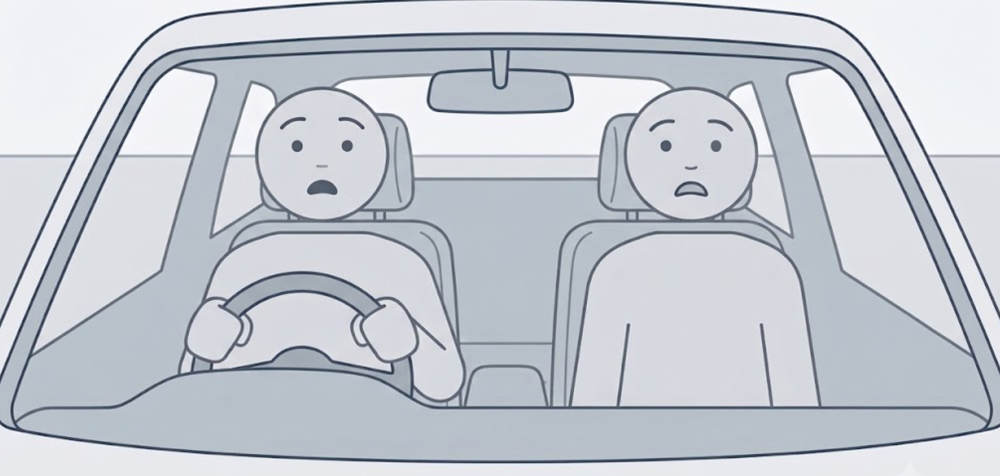
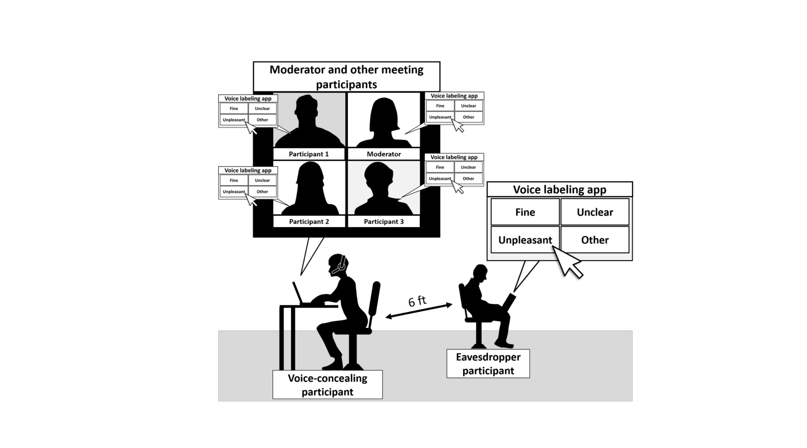
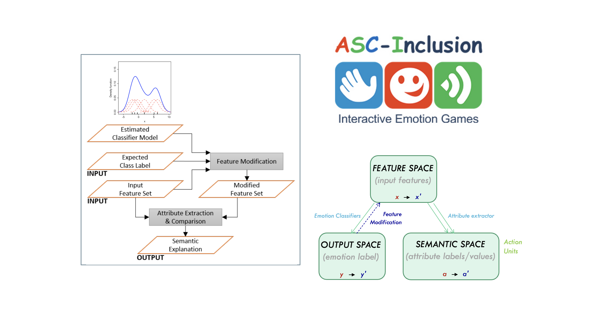
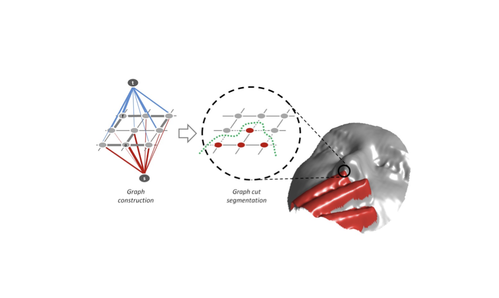
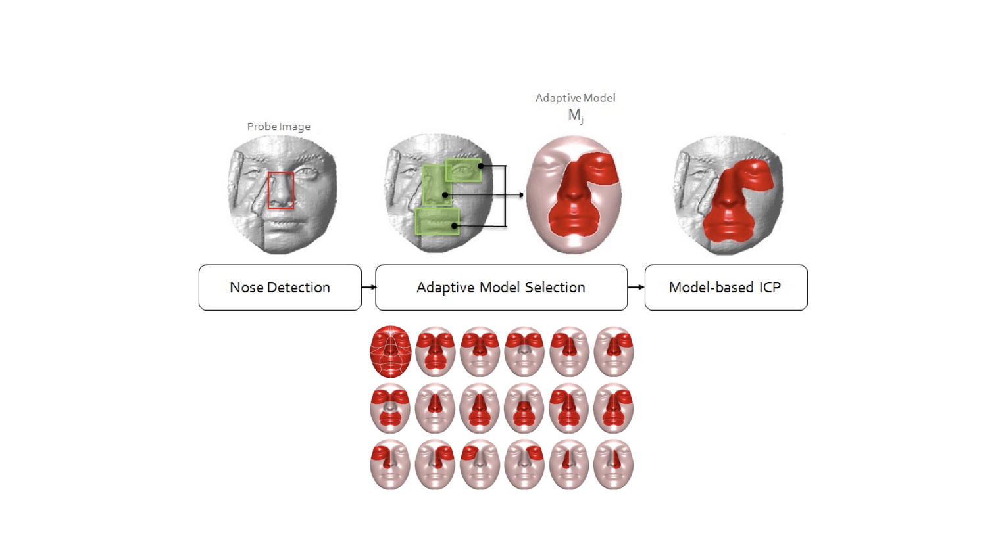

Independent Research [2026 - present]

Early Prediction of Sepsis Onset in ICU Patients
Architected an end-to-end, multimodal machine learning pipeline for the early prediction of sepsis onset in ICU patients utilizing the MIMIC-IV dataset. Engineered robust data pipelines that integrated high-resolution tabular physiological data with complex unstructured clinical notes, leveraging vLLM BioMistral for rapid text distillation and ClinicalBERT for dense embedding generation. Conducted rigorous experimental design, including comprehensive ablation studies with swappable backbones (GRU, TCN, Transformers) under realistic clinical constraints (e.g., 0-hour vs. 6-hour blackout windows). Demonstrated that fusing temporal tabular sequences with text embeddings improves predictive accuracy and clinical robustness.

Sentimata: LLM-Driven Sentiment Analysis & Rating Prediction
Engineered a sentiment analysis framework utilizing LLM-based text distillation for accurate review rating prediction. Conducted an extensive comparative analysis across the machine learning spectrum, evaluating traditional ML, standard DNNs, frontier models (GPT-5.1), and open-source LLMs (LLaMA 3.1 8B). Results validated that advanced LLM architectures significantly minimize predictive error, with GPT-5.1 achieving peak performance and open-source alternatives providing highly competitive results via fine-tuning.
Industry Research @ Intel Labs [2015 - 2025]
AI for Yield: Prediction & Optimization
Delivered ML-driven systems generating over $1B in measured business impact. Built end-to-end ML workflows spanning the complete project lifecycle from data ingestion and feature engineering to iterative machine learning model training and evaluation. Created novel signal scoring and ranking frameworks that elevated downstream relevance metrics and transformed raw data into actionable, high-level business decisions.
AI for Trust: Trusted Media
Co-led quantitative user research evaluating human perception of deepfakes and identifying key explainability requirements for a trustworthy detection systems. Executed rigorous statistical analyses to benchmark human detection accuracy and identify significant influence factors. Evaluated explainability elements that are critical for building user trust. Translated empirical findings into actionable mitigation strategies, addressing data annotation bias, the necessity of human-AI collaboration and public awareness.

AI for Education: Kid Space
Directed quantitative UX research for the Kid Space initiative, designing and executing analyses for multiple in-the-wild user studies to evaluate complex behavioral hypotheses. Employed rigorous statistical modeling to analyze parental concerns as well as the multidimensional learner engagement, encompassing behavioral and emotional states, physical and social interactions, and collaborative problem-solving dynamics. Translated these empirical findings into evidence-based insights to validate core assumptions and optimize the learning experience.

AI for Education: Adaptive Learning
Served as the technical lead for a real-time, multimodal student engagement analytics framework. Directed the complete machine learning pipeline, encompassing system design, data architecture, feature engineering, and large-scale machine learning model training. Ensured system robustness and generalizability through rigorous experimental design, combining offline metric validation with online A/B testing prior to deployment.

HELP: Human-Expert Labeling Protocol
Co-developed the Human Expert Labeling Process (HELP), a standardized observational methodology designed to accurately classify and quantify complex, higher-order user states. Architected an end-to-end annotation pipeline encompassing coder recruitment, active labeling, and rigorous statistical validation. Initially engineered to capture engagement in learning environments, the framework demonstrated high generalizability and was successfully adapted to model diverse user behaviors across multiple domains.

Emotional Understanding for Automated Driving
Foundational methodology towards emotional understanding in automated vehicles. Studied emotional reactions of driver-passenger dyads through simulation for emotion induction. Developed a reliable context-specific emotion labeling process.

Whisper Chat: Contextual Voice Changes in Remote Meetings
Quantitative user experience research to analyze voice changes and the respective perceptions during remote meetings held in shared spaces. Conducted statistical analysis on user study to understand preferences for voice concealing in public spaces and how it impacts quality and perception. Synthesized findings to influence AI product roadmap and feature prioritization, enabling alignment between development and actual needs.
Academic Research [2006 - 2015]

Interpretable ML for Formative Feedback Generation
Semantically meaningful formative feedback generation through explainability of models. Generalized approach that can work on different expressive modalities of face, voice, and gesture. Providing actionable feedback to children with Autism Spectrum Conditions (ASC) while they are learning how to perform emotional cues.

Robust 3D Face Recognition under Adversarial Conditions
Research and development of 3d face recognition techniques that can handle adverse conditions of facial occlusions and expression variations in a robust manner. Generalized approach that can detect highly deformed regions for elimination. Masked projection to handle dimensionality reduction on incomplete data without additional training.

3D Face Registration under Adversarial Conditions
Research and development of 3D facial surface registration techniques, with the aim of robustness under adverse conditions. Multiple average face models to handle gender and race variations. Patch-based modeling towards a generic approach that could handle both facial occlusions and expression variations.
Patents
-
Methods and Apparatus for Identifying Food Chewed and/or Beverage Drank
-
Technologies for Emotion Prediction based on Breathing Patterns
-
Engagement Level Determination and Dissemination
-
Side Face Image-based Mental State Determination
-
User State Model Adaptation through Machine Driven Labeling
-
System and Method for Identifying Learner Engagement States
Publication Awards
-
Systems Thinking and Change Award: Outstanding Publication
-
Learner Engagement Award: Outstanding Publication
-
Learner Engagement Award: Excellence in Innovation
-
Best Paper Award